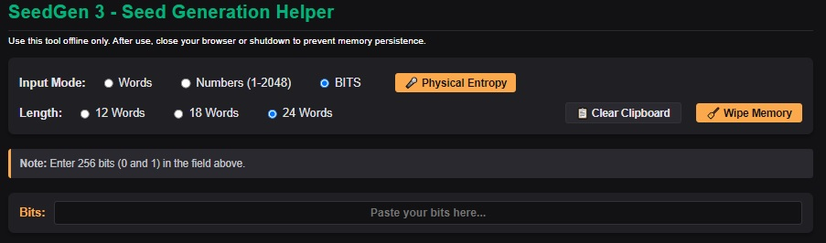
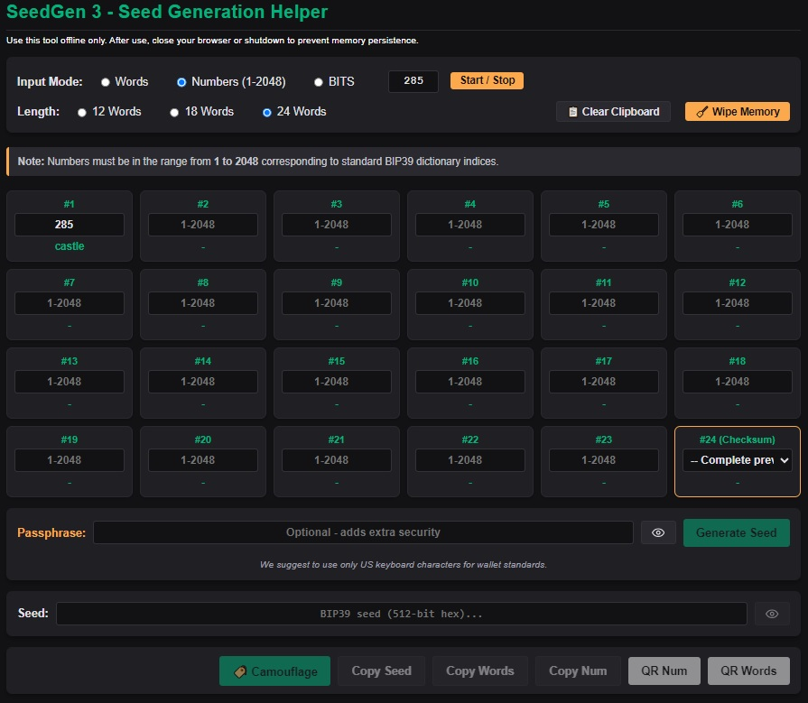
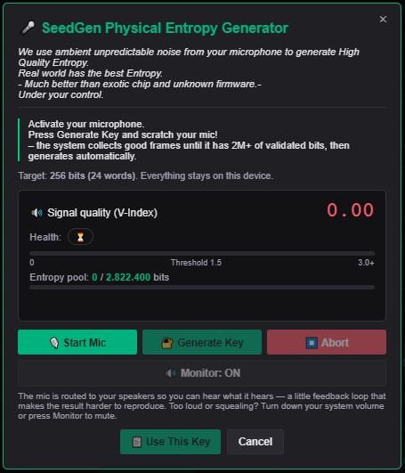

Physical Entropy: Real World Randomness
We stated it in "Why?", but it deserves repeating: striving for true self-custody while delegating key generation to black-box hardware—which is continuously targeted by hackers—is a fundamental flaw.
Where does true, unmanipulated randomness live? In the physical world.
Why entrust key generation to a proprietary chip or unverifiable code that attackers actively try to exploit? Generating your own entropy is the cornerstone of control and security. Fortunately, physical entropy can be harvested in multiple ways.
1. Manual Bit Input (Dice Rolls)
Roll physical dice (even = 0, odd = 1) or flip coins to construct 256 bits of pure, physical randomness. Input your custom binary stream directly into the interface.

2. Manual BIP-39 Selection & Quick Random Picker
Prefer picking your own sequence? Select words directly from the 2048-word BIP-39 dictionary, input custom numbers, or use the built-in Start / Stop random index generator to quickly grab positions (like index 973 for "kangaroo") and fill your grid effortlessly.

3. Acoustic Ambient Harvester
You can capture real-world environmental acoustic noise. We spent countless hours testing and refining this process to extract true randomness from physical sound waves.
It's not just raw sound: we collect hundreds of audio samples to gather over 2.8 million bits, rigorously checking the entropy quality of every single sample. These millions of bits are then cryptographically hashed down to the 256 bits required for your wallet—a massive 11,000 to 1 compression ratio that ensures peak entropy density.

4. NIST SP 800-22 Standard Verification
We compared our physical entropy sample against one generated by a standard CSPRNG — the same class of random number generator used by browsers and most software — both run through the NIST SP 800-22 statistical test suite. The result: for the data we have, both samples are comparable in entropy quality, with no meaningful difference in either direction.
Worth keeping in mind: a CSPRNG is specifically engineered to pass this kind of test. Matching it is the expected, healthy target for a properly conditioned entropy source — and we hit it.
We can't publish the raw samples used in this test. And without them, the official NIST report isn't just technical — it's genuinely unreadable, even by the standards of a technical report.
For that reason, we also ran the ENT test suite, which produces a far more readable output. The table below is the most transparent thing we can offer without handing out the actual entropy samples.
| Metric | Our Sample (Mic + SHA-256 + CSPRNG XOR) | CSPRNG Control | Ideal |
|---|---|---|---|
| Entropy | 7.998411 bits/byte | 7.998642 bits/byte | 8.0 |
| Chi-square percentile | 42.35% | 71.13% | 50%, neither near 0% nor 100% |
| Arithmetic mean | 127.4520 | 127.4660 | 127.5 |
| Monte Carlo Pi | 3.140112 (0.05% error) | 3.152487 (0.35% error) | 3.14159265 |
| Serial correlation | -0.003230 | 0.001234 | 0.0 |